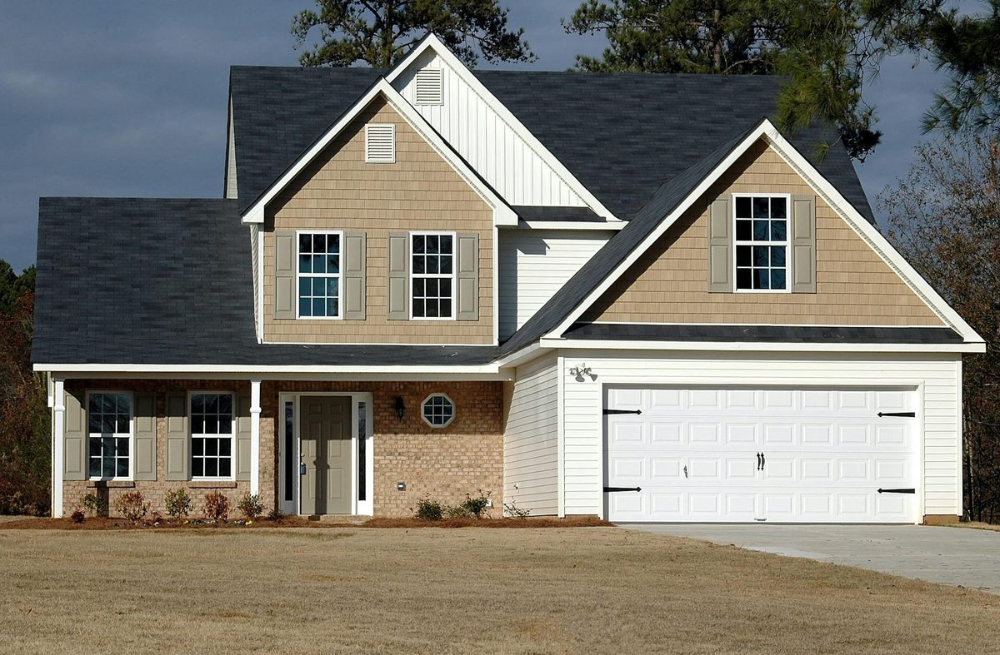

Farragut sits at the western edge of Knox County and stretches into Loudon County along the Tennessee River. The housing stock here skews newer than most of Knoxville - the bulk of Farragut went up between 1985 and 2010, with continued buildout through the present day. That means larger floor plans, bigger attics, more ductwork running through unconditioned space, and the highest dollar-savings potential per spray foam job in the Knoxville metro. We serve Farragut, Concord, Village Green, and the Northshore Drive corridor every week.

We install every type of spray polyurethane foam insulation for Farragut homeowners and business owners:
Farragut's housing stock has three characteristics that make spray foam the highest-ROI insulation upgrade available in the area. First, the average Farragut home is larger than the Knoxville metro average - 2,400-3,500 sq ft is typical. Bigger homes have bigger attics with more ductwork in them, so attic encapsulation captures more efficiency loss. Second, most Farragut homes were built with HVAC ductwork in the attic, which is the worst possible location in East Tennessee's climate - cooling air running through 140°F unconditioned space loses 25-35 percent of capacity before it reaches the registers. Spray foam on the roof deck pulls those ducts inside the thermal envelope. Third, the typical Farragut household has higher cooling demand (more conditioned square footage, often 2-3 HVAC zones) which means the monthly utility bill is bigger, which means the percentage savings translate to bigger dollar amounts.
A typical Farragut homeowner sees $80-$180 per month in summer electric bill reduction after attic spray foam. That is roughly $1,000-$2,000 per year. Combined with the 25C federal tax credit (30 percent back up to $1,200) and any applicable TVA EnergyRight rebate, the payback period on a Farragut attic encapsulation is usually 4-7 years.
Every Farragut neighborhood, including: Fox Den, Village Green, Andover, Belleaire, Concord Hills, Saddle Ridge, Sugarwood, Whittington Creek, Avalon, Brookmere, Loch Lomond, McFee Manor, Polo Club, Berkeley Park, Sweetbriar, Wynfield, and all surrounding subdivisions off Kingston Pike, Northshore Drive, Watt Road, Concord Road, and Smith Road.
Call (865) 564-7823 - Mon-Sat 7AM-7PM. Serving every Farragut neighborhood.